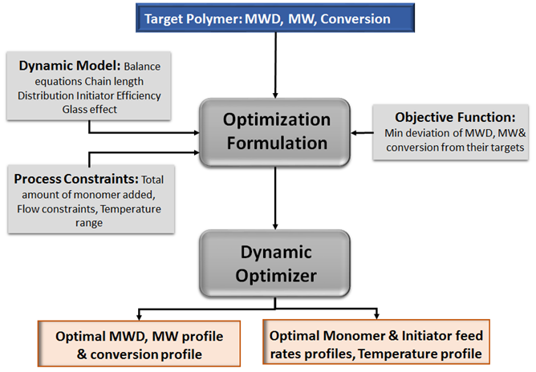
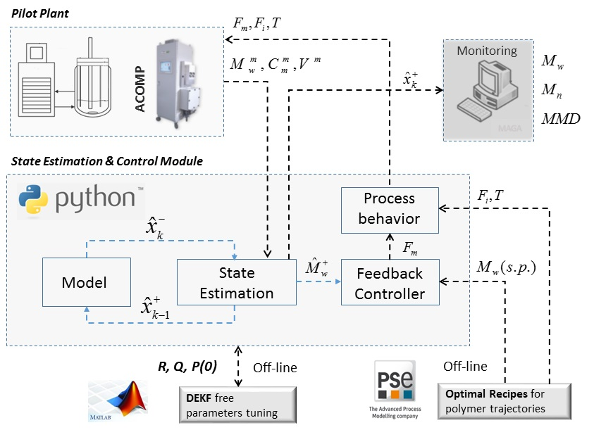

Research Area
Process Systems & Control
Developing optimization, control, and decision-making methods for complex chemical, energy, and manufacturing systems.

Advanced Control
Model-Based & Robust Process Control
Our research focuses on model-based and robust control strategies for complex process systems. These approaches combine first-principles models, real-time data, and state estimation techniques to ensure stable and efficient operation under dynamic and uncertain conditions.
We develop integrated frameworks that connect process models, monitoring systems, and feedback control architectures to support real-time decision-making. This enables improved performance, constraint handling, and fault detection in pilot-scale and industrial processes.

Process Optimization
Process Design & Optimal Operation
We investigate optimization-based approaches for the design and operation of chemical and energy systems. Our work focuses on formulating dynamic optimization problems that account for process constraints, system behavior, and performance objectives.
By integrating modeling, simulation, and optimization tools, we develop strategies to determine optimal operating policies, improve efficiency, and enhance system performance. These methods support decision-making across multiple scales, from unit operations to fully integrated process systems.